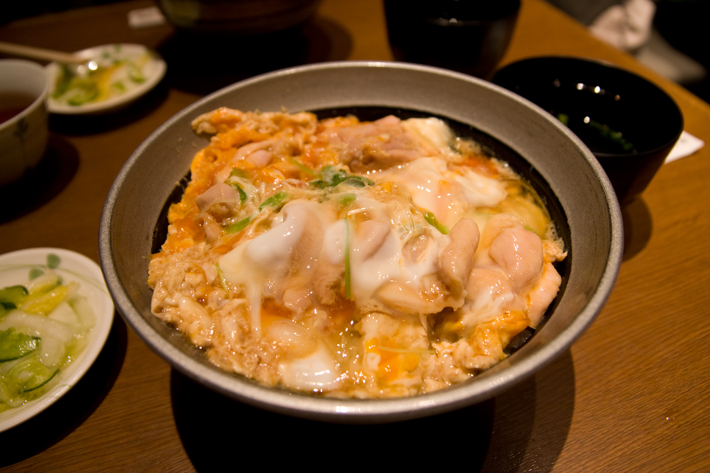

Oyakodon
Home

Description
Oyakodon is a delicious traditional Japanese meal consisting of chicken
sautéed and then cooked in dashi, and then finished with egg and served
over rice. It's really easy, filling, and delicious.
Ingredients
- 1/2 tablespoon cooking oil
- 1-2 skinless, boneless chicken thighs
- 1/2 yellow onion
- 1/4 cup dashi stock
- 1 tablespoon soy sauce
- 1 tablespoon mirin
- 1 tablespoon brown sugar
- 2-3 large eggs
- 1 serving white rice
-
Cut chicken thighs into bite sized pieces, around 3/4-1 in squares.
- Slice onions lengthwise about 1/4 in wide.
-
Crack the eggs into a bowl and very lightly beat the eggs, aiming to
leave the yolk and egg whites generally unmixed.
-
Mix the dashi, soy saue, miring, and brown sugar into one seasonings
mixture.
-
Heat oil in a skillet over medium heat. Add onion and cook before onion
becomes translucent, then pour the seasonings mixture and let it simmer.
-
Add chicken on top of the onions, making sure to even distribute it on
the onions. Cook until the chicken is no longer pink and onions are
tender, flipping the chicken halfway through.
-
Whisk eggs in a bowl, then pour into the skillet. Cover the skillet,
reduce the heat, and steam until the egg is cooked.
-
Lay over rice in a bowl and serve, garnishing with optional spring onion
slices.